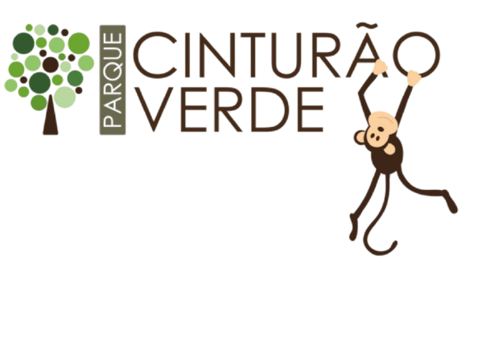

Sobre o Cinturão verde
O Parque Municipal Cinturão Verde (PMCV) é uma área de preservação florestal que circula o perímetro urbano da cidade de Cianorte/PR
daí o seu nome“Cinturão Verde”. Possui cinco módulos:Uruçora (Perobas), Cristalino, Mandhuy, Fantasminha e Corujinha..
E oferecemos profissionais experientes e antenados às mudanças no mundo e para maior preservação da nossa reserva. Com o nosso atendimento possui padrão de excelência e agilidade, garantindo qualidade e satisfação dos nossos cidadãos.
1987.O sonho de criar o Parque Municipal teve início no ano de 1987, quando a Apromac apresentou um projeto ao Governo do Estado.
1993.Em 1993, a Companhia Melhoramentos Norte do Paraná (CMNP) repassou para o Município 20 hectares de floresta, localizados no Manduhy (Lei Municipal n.º1534 de 7/12/93).
1995.Em 1995, o empresário José Noé Martelli empreendeu o Condomínio Martelli e teve que adequar a Área de Reserva Legal, que foi repassada ao Município e, então, por meio da Lei Municipal Nº 1625/95, criou-se o Módulo Uruçora.
2000.No início de 2000, houve então a efetiva doação de uma área maior pela CMNP, o equivalente a 300 hectares, através da Lei Municipal Nº 2086 de 28 de abril. Com isso, criou-se o Conselho Municipal de Meio Ambiente (COMMA) e a data ficou marcada na história do Município, sendo celebrada todos os anos como o aniversário do Parque Municipal Cinturão Verde.
Nossa Reserva
Nosso Cinturão Verde está localizado no coração da cidade.
Qualidades
- Atendimento aos Cidadãos
- Espaço diferenciado
- Localização
- Profissionais Qualificados
- Pontualidade
- Limpeza